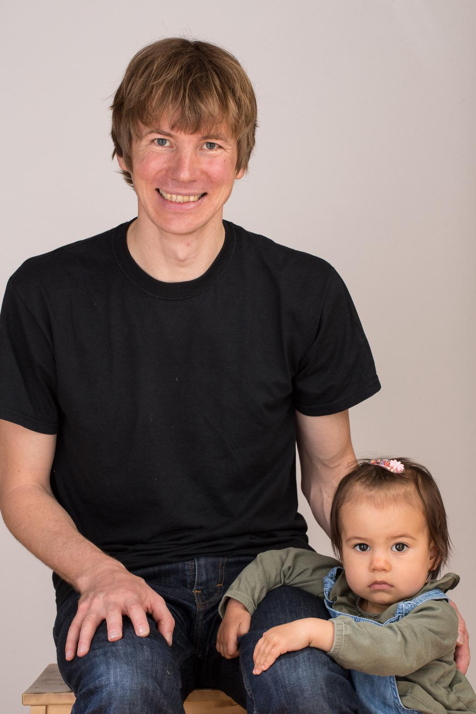

I am a postdoctoral fellow at the University of Duisburg–Essen, working on Eugen Kovac's DFG-funded project "Timing Games: Theory and Applications." My research spans economic theory, game theory, information economics, and AI safety and governance.
Previously, I was a researcher at CERGE-EI in Prague. I hold a Ph.D. in Economics from New York University (2019).
News
- Spring 2026 SPAR fellow, working on AI race dynamics with Katja Grace.
- Summer 2026 Visiting the Center for AI Safety as an AI and Society Fellow, working on AI race dynamics.

Selected Publications
Risk Perception: Measurement and Aggregation
Journal of the European Economic Association, 2025, 23(4), 1309–1349
Boundedly Rational Demand
Theoretical Economics, 2024, 19(4), 1415–1442